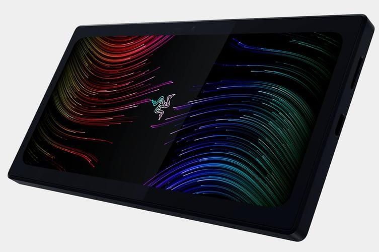

Razer Edge 游戏平板

独显加持的 Windows 游戏平板，性能与便携硬碰硬的先驱。
客观评测
Razer Edge 是一台以平板形态出现的游戏 PC：i5/i7 低压处理器配 NVIDIA GT 640M LE 独立显卡，4-8GB 内存，运行 Windows 8，可运行 PC 游戏大作。10.1 英寸屏分辨率仅 1366×768，平板本体就重约 910 克，接上手柄底座后超过 1.3 公斤。实测中等画质可跑 30 帧以上，高负载下风扇噪音与发热都很可观，续航不足 4 小时。
主观点评
它是性能怪兽与便携设备的一次硬碰硬，握持时的分量感时刻提醒你这是一台真 PC，插上手柄底座后更像捧着一台游戏主机。作为 Windows 游戏平板的先驱，它的思路在十年后被 Steam Deck 一类掌机接棒。今天回看，它更像一次昂贵而热血的技术宣言。
优点与不足
- 平板形态中罕见的独显性能
- 可运行完整 PC 游戏
- 手柄底座把操控体验拉满
- 发热与风扇噪音明显
- 续航不足 4 小时
- 整机重量便携性堪忧
参数规格
| 屏幕 | 10.1 英寸触摸屏 |
|---|---|
| 分辨率 | 1366×768 |
| 处理器 | Intel Core i5-3317U（高配可选 i7） |
| 显卡 | NVIDIA GeForce GT 640M LE |
| 内存 | 4GB / 8GB |
| 存储 | 64GB - 256GB 固态硬盘 |
| 系统 | Windows 8 |
| 重量 | 平板本体约 910 克，含手柄底座超 1.3 公斤 |
| 电池 | 游戏实测不足 4 小时 |
| 配件 | 可选游戏手柄底座、键盘底座 |